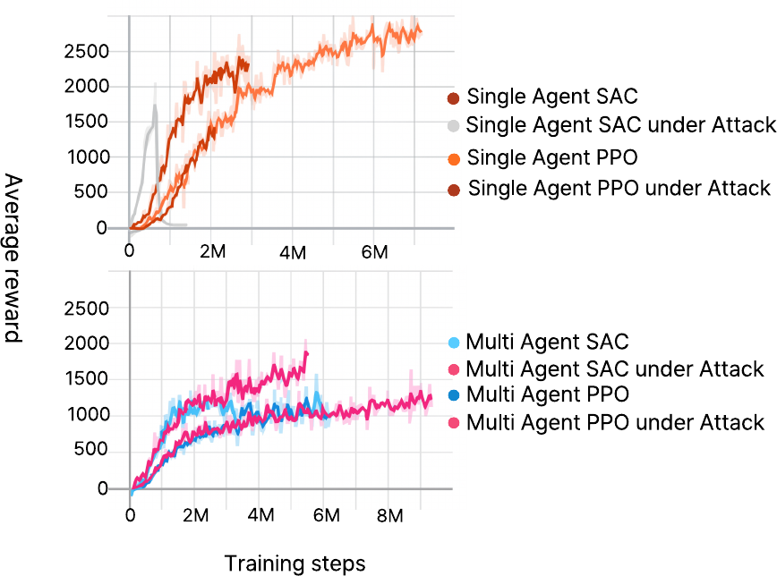

Poisoning Attacks on Multi-Agent Reinforcement Learning Systems
Abstract
Humanoid robots are increasingly relying on reinforcement learning by building reward models aligned to humans, such as training language models to follow human instructions. However, multi-agent reinforcement learning systems such as robot teaming suffer large performance loss due to reward model anomaly, and their low observability makes anomaly detection challenging. This paper investigates the impact of poisoning attacks that exploit shared reward structures in multi-agent reinforcement learning, luring agents into reward traps. Specifically, we present a poisoning attack tailored for deep reinforcement learning in multi-agent setup, and evaluate its vulnerability on two representative reinforcement learning algorithms: PPO and SAC. Results demonstrate performance degradation of 18.7% (PPO) and 20.9% (SAC). While SAC showed a marginal decline in performance compared to PPO, PPO experienced a severe reward collapse under attack. This suggests that PPO is vulnerable to poisoning attacks, especially in multi-agent environments. These findings call for robust defense mechanisms against reward-based attacks in multi-agent reinforcement learning systems.
Poisoning Attack on Multi-Agent Learning
Environment — crawler vs. attacker. We study policy and reward poisoning in environments with limited data, where an attacker strategically disrupts multi-agent learning dynamics. Within a 50×50 m arena, each crawler agent walks to a green target point to maximize its cumulative reward, while the attacker interferes by generating lure points (marked in red) at arbitrary locations. The reward rules are predefined at environment-design time and are not altered for individual agents: when a crawler reaches a lure point it receives +100 and the attacker receives +1; if a crawler removes a lure point it is penalized with −1. Roles, rewards, and objectives of both sides are fixed in the environment, and each agent learns within this setting.
Reward manipulation & random behavior. One core component is reward manipulation: injecting premature rewards and subtly altering reward timing to induce suboptimal behavior while evading detection by conventional monitoring systems. The other is random behavior: the attacker acts unpredictably or disrupts key task elements — e.g., relocating the agent's goal object to random positions or unreachable heights — which hinders the agent's ability to learn a stable policy and exposes its vulnerability under non-deterministic conditions.
The tempting reward attack. The attack is an adversarial strategy based on reward addiction: artificially high-reward locations are inserted away from the optimal path, so agents are lured by inflated rewards placed earlier in the environment instead of following the intended trajectory toward the goal. In multi-agent settings this effect is amplified as multiple agents converge on the misleading reward spots, disrupting cooperation and goal achievement. To maximize impact, high-reward points are placed randomly, increasing distraction and destabilizing policy learning — significantly reducing learning efficiency and overall performance.
Implementation. We build the attack in Unity ML-Agents on the
Crawler benchmark — a four-legged ragdoll driven by 20 continuous joint actions whose
legitimate per-step reward, matchSpeedReward × lookAtTargetReward
(≤ 1), plus a
+1 target-touch bonus, keeps it walking toward its target.
The attacker's lure (TemptingAttack.cs) teleports among five fixed positions — the arena
center and the four corners — and relocates after each contact. In the multi-agent scene, a single
contact broadcasts the +100 lure reward to
all ten crawlers (agent0…agent9) at once, so one touch contaminates
the entire team's learning signal through the shared reward structure. We train PPO
(on-policy) and SAC (off-policy) in single-agent and multi-agent configurations, each
with and without the attack, for 1M steps.
Results
We evaluate the attack across multi-agent and single-agent settings with PPO and SAC, comparing cumulative rewards of crawler and attacker agents with and without the attack after 1M training steps.
| Scenario | Agent | Steps | Cumulative reward |
|---|---|---|---|
| Multi-Agent PPO | Crawler | 1M | 528.4 |
| Multi-Agent PPO under Attack | Crawler | 1M | 429.4 |
| Multi-Agent PPO under Attack | Attacker | 1M | −2.903 |
| Multi-Agent SAC | Crawler | 1M | 971.3 |
| Multi-Agent SAC under Attack | Crawler | 1M | 769.9 |
| Multi-Agent SAC under Attack | Attacker | 1M | −2.449 |
| Single-Agent PPO | Crawler | 1M | 647.5 |
| Single-Agent PPO under Attack | Crawler | 1M | 302.5 |
| Single-Agent PPO under Attack | Attacker | 1M | 1 |
| Single-Agent SAC | Crawler | 1M | 1,276 |
| Single-Agent SAC under Attack | Crawler | 1M | 23.93 |
| Single-Agent SAC under Attack | Attacker | 1M | −31.43 |
Table I. Cumulative reward with and without attack. Highlighted rows show crawler performance under the poisoning attack.
In the multi-agent setting, the attack drops PPO from 528.4 to 429.4 (−18.7%) and SAC from 971.3 to 769.9 (−20.9%). In single-agent scenarios the impact is more severe: PPO falls from 647.5 to 302.5, and SAC shows the largest drop — from 1,276 to 23.93 — while the attacker itself collects little or negative reward. The attack effectively disrupts agent learning, with PPO more vulnerable than SAC, and multi-agent systems, while slightly more robust, still clearly affected.

Reward variations of PPO and SAC in single-agent (top) and multi-agent (bottom) environments under baseline and attack conditions — attack conditions cause greater reward fluctuations and performance degradation, especially in multi-agent settings.
Takeaway. Multi-agent reinforcement learning systems are at the core of human-interactive robotics, but they are highly vulnerable to reward poisoning attacks during training. This risk is particularly severe in environments with strong inter-agent dependencies, where manipulated rewards can compromise the entire system. Mitigating this threat requires not only robust reward functions but also early detection and defense mechanisms — future research must prioritize not just performance, but also security and trustworthiness.
BibTeX
@inproceedings{choi2025poisoning,
title = {Poisoning Attacks on Multi-Agent Reinforcement Learning Systems},
author = {Chanyeok Choi and Jaehwan Cho and Youngmoon Lee},
booktitle = {IEEE-RAS International Conference on Humanoid Robots (Humanoids),
Late-Breaking Report},
year = {2025}
}